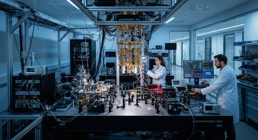

08:30 AM
Registration & Welcome
Check-in at the ICC Innovation & Commercialisation Centre, collect your mission patch, and enjoy morning refreshments.
how_to_reg
location_onICC Main Lobby
Explore the full tentative program for Qiskit Fall Fest 2026 @ UTM. From introductory registration to hands-on quantum lab visits, prepare for a day bridging software and awaiting hardware.
Check-in at the ICC Innovation & Commercialisation Centre, collect your mission patch, and enjoy morning refreshments.
Inaugural speeches by the Deans of the Faculty of Computing and Faculty of Science, outlining the vision for quantum at UTM.
Deep dive into the intersection of quantum hardware and software ecosystems with leading researchers.
Dr. Yap Yung Szen
Ts. Dr. Nur Haliza Abdul Wahab
Hands-on experience with Qiskit for beginners. Bring your laptops to write your first quantum circuits.
Official establishment of the UTM quantum student community and affiliation with MyQI.
Building the next generation of researchers.
Guided tours of the AQSolotl & Quantum Labs. Witness "Hardware still Awaiting" in physical reality.
